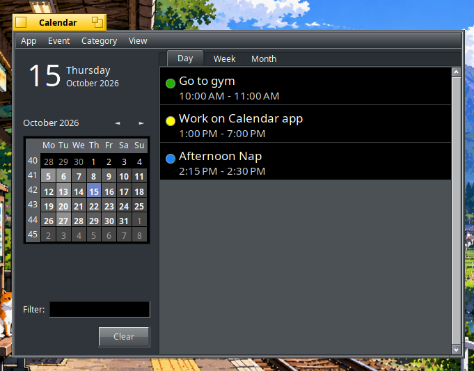

Calendar's User Documentation
Event manager — Category manager — Tasks — Settings — Reminders — Scripting — Help
Calendar's User Documentation
Event manager — Category manager — Tasks — Settings — Reminders — Scripting — Help
Calendar is a native Haiku application to manage your appointments. It was originally developed by Akshay Agarwal for the Google Summer of Code of 2017, see his Blog posts about it. This edition is developed and maintained at sikosis/Calendar.
You can create, edit and delete events, and cancel or hide them, categorize events and show them in a day, week or month view.

At the top left is today's date (click it to jump back to "today" from whenever you are in the calendar). Below is a calendar view, highlighting the currently shown date. Days with events are tinted as well; the more events on a day, the darker they get. Go figure... :)
To the right is the actual list of events. With the tabs at the top, you set the view to show all events for that , , or .
The field narrows the event list automatically as you type. Delete the filter text or click to show all events again.
Right-click an event to get a context menu to create a event, or , , or an existing event.
Hidden and deleted events can remain visible by activating and are then tinted red. Deleted events are moved to the system's Trash. If you empty the Trash, your events will be truely gone and cannot be "un-deleted" any more!
 Event manager
Event managerDouble-clicking an event also edits an event. As when creating a new event, it opens the Event manager.

The Event manager lets you set all the details of an event:
Category managerYou can create and edit event categories by invoking .

Calendar comes with only two categories preinstalled: "Default" and "Birthday". The "Default" category cannot be deleted but can be modified. Click on or select a category and click to open the Category edit window:

Here you simply enter the name of the category and choose a color for it.
Tasksopens Calendar's own scheduled task manager. It lists tasks saved in Calendar's settings and provides , and controls.
A task consists of a schedule and a command. The schedule accepts five minute, hour, day-of-month, month and day-of-week fields, such as 0 9 * * 1-5. Lists, ranges and steps are supported, as are @reboot, @hourly, @daily, @weekly, @monthly and @yearly.
The persistent Calendar Deskbar replicant checks these tasks once per minute and launches matching commands through /bin/sh as the current user. It continues scheduling while the main Calendar window is closed. Choosing from the replicant stops the scheduler and removes the replicant.
Settingsopens a window with a few available options:

RemindersYou can set reminder for any event in the Calendar while creating the event (or while editing it afterwards). The reminder appears in the form of a system alert, which contains , , and the time remaining till the event. It takes help of a , or basically a background application, which enables it to deliver the reminders even if the Calendar application is not open.
was developed under Google Summer of Code 2022 by Harshit Sharma, see his wrap up blog post about it.
ScriptingCalendar supports Haiku scripting through hey. Calendar must be running before sending it commands. To inspect the complete scripting vocabulary, enter:
hey Calendar GETSUITES
The following commands read Calendar's current state:
hey Calendar GET Version hey Calendar GET SelectedDate hey Calendar GET View
Dates use the unambiguous YYYY-MM-DD format. The available views are day, week and month.
hey Calendar SET SelectedDate TO "2026-10-15" hey Calendar SET View TO week
Commands can also navigate to today or open Calendar windows:
hey Calendar DO Today hey Calendar DO NewEvent hey Calendar DO ManageCategories
HelpPlease report bugs or create feature requests at Calendar's issue tracker at GitHub.
You can help translate Calendar to even more languages at Polyglot.